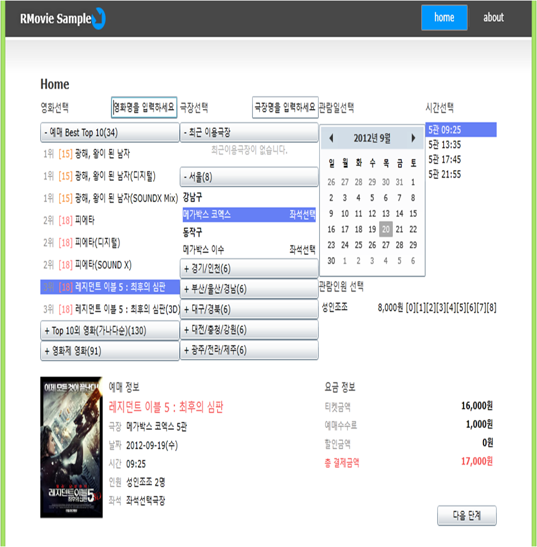
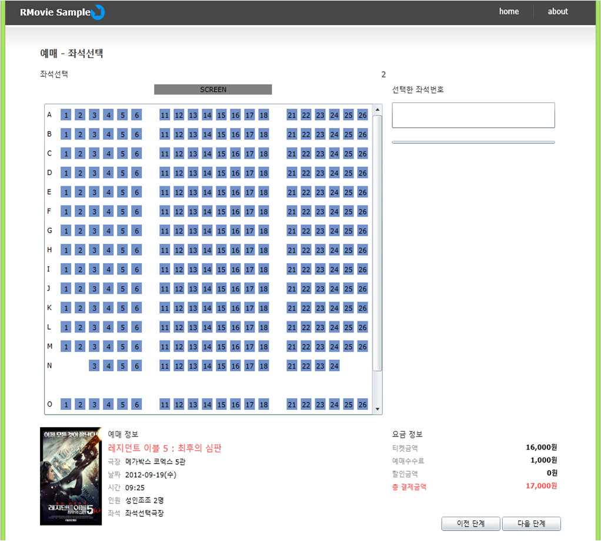
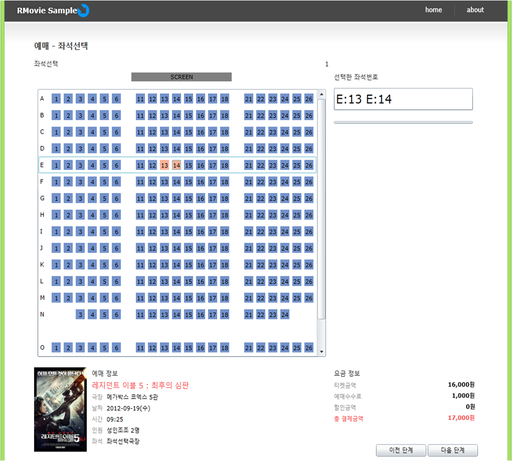
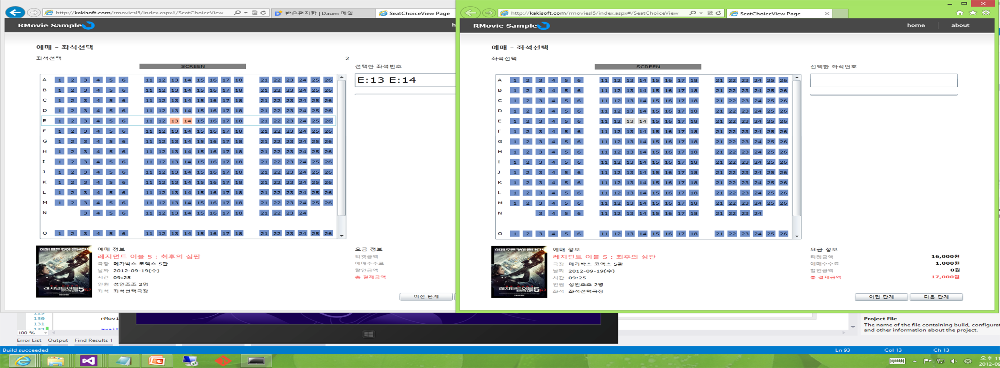
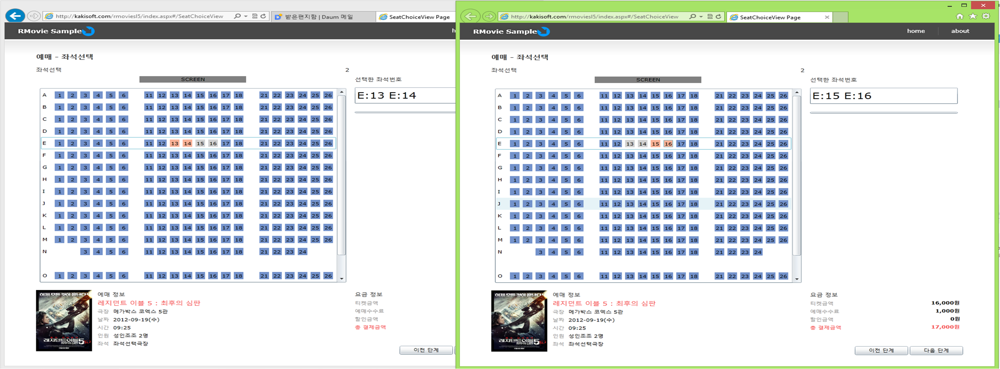
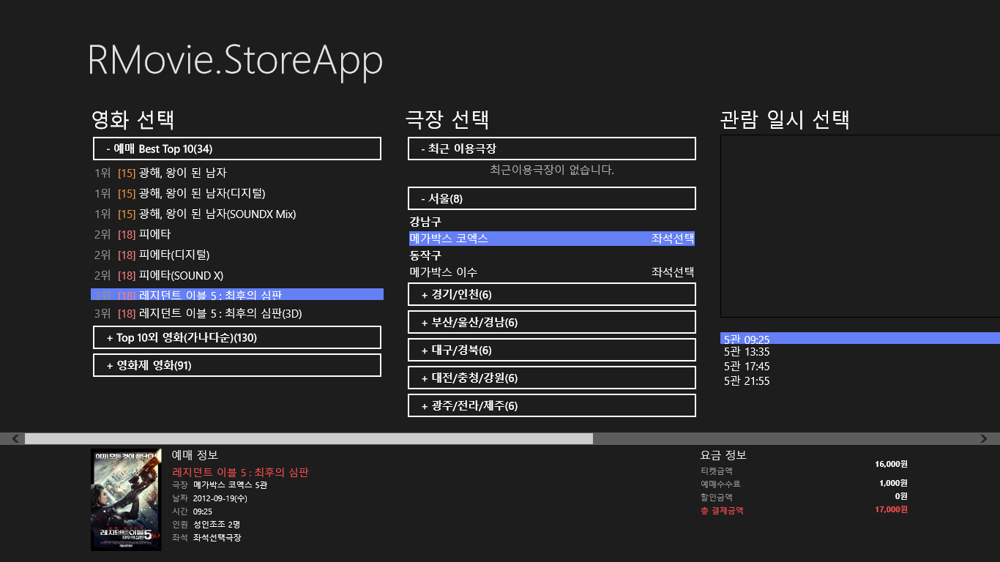
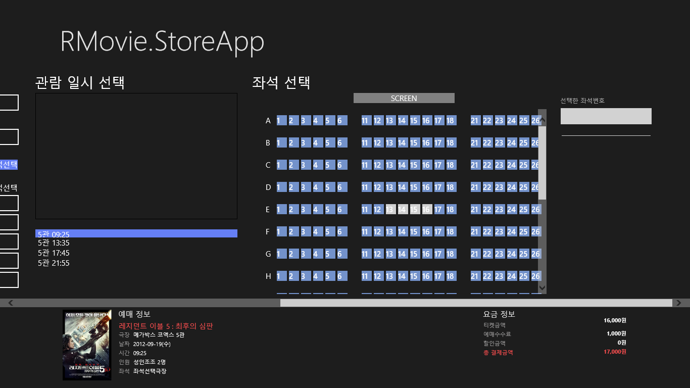
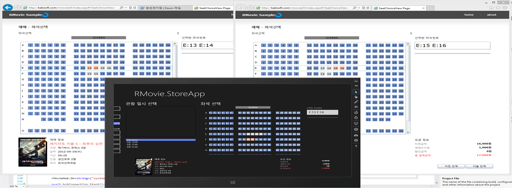

지금까지 나와있는 영화 예매 시스템의 큰 문제는 좌석 선택시 실시간으로 반영이 않된다는 것입니다.
그 문제를 해결한 셈플이니 한번 살펴봐 주시기 바랍니다.
1. 좌석 예약하는 모양으로 만들어 보았습니다. 실제 동작은 하지 않습니다. 아래 셈플은 Silverlight5로 만들어졌습니다.
http://kakisoft.com/rmoviesl5/index.aspx

2. 좌석선택하는 화면입니다.

3. 첫번째 고객이 좌석 E:13, E:14를 선택합니다.

4. 두번째 고객이 접속해서 보면 E:13, E:14는 이미 다른 사용자가 선택한 것으로 표시 됩니다.

5. 두번째 고객이 좌석 E:15, E:16을 선택합니다. 두번째 고객이 선택한 것이 즉시 처음 고객의 화면에 반영됩니다.

6. 세번째 고객은 Windows 8 StoreApp을 이용해서 접속 합니다.

7. 좌석 선택을 확인하면 E:13, E:14, E:15, E:16번 좌석이 이미 선택되어 있습니다.

8. 전체 화면 입니다. 세번째 고객이 앱에서 좌석 F:13, F:14을 선택합니다. 나머지 클라이언트에도 즉시 반영이 됩니다.

9. 스토어앱은 셈플은 요청을 하시면 보내드리겠습니다.
10. 국내 영화 예매 시스템은 대부분 윈8에서 동작이 않됩니다. 그래서 새로운 시스템을 구성해 보았습니다.